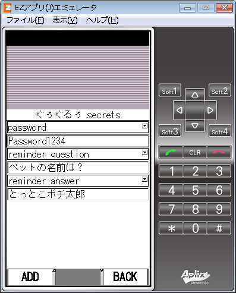

IDPWMemo-OAP
IDPWMemo-OAP v0.2.1a
OpenAppli (MIDP2.0/CLDC1.1)
Download page (for au(KDDI) cell phone)
repository:
https://github.com/neetsdkasu/unkocrypto/tree/master/IDPWMemo_OAP
IDやパスワードの覚え書きをするためのアプリ
screenshots
